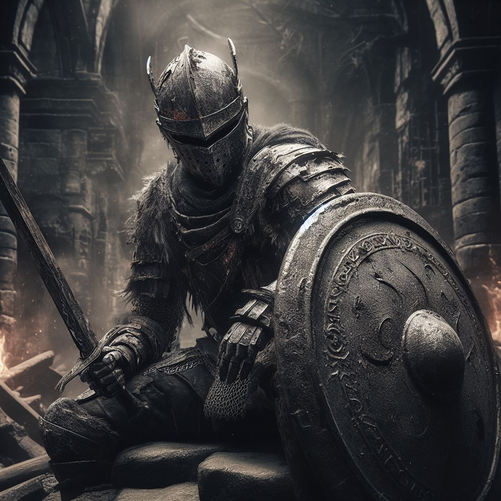
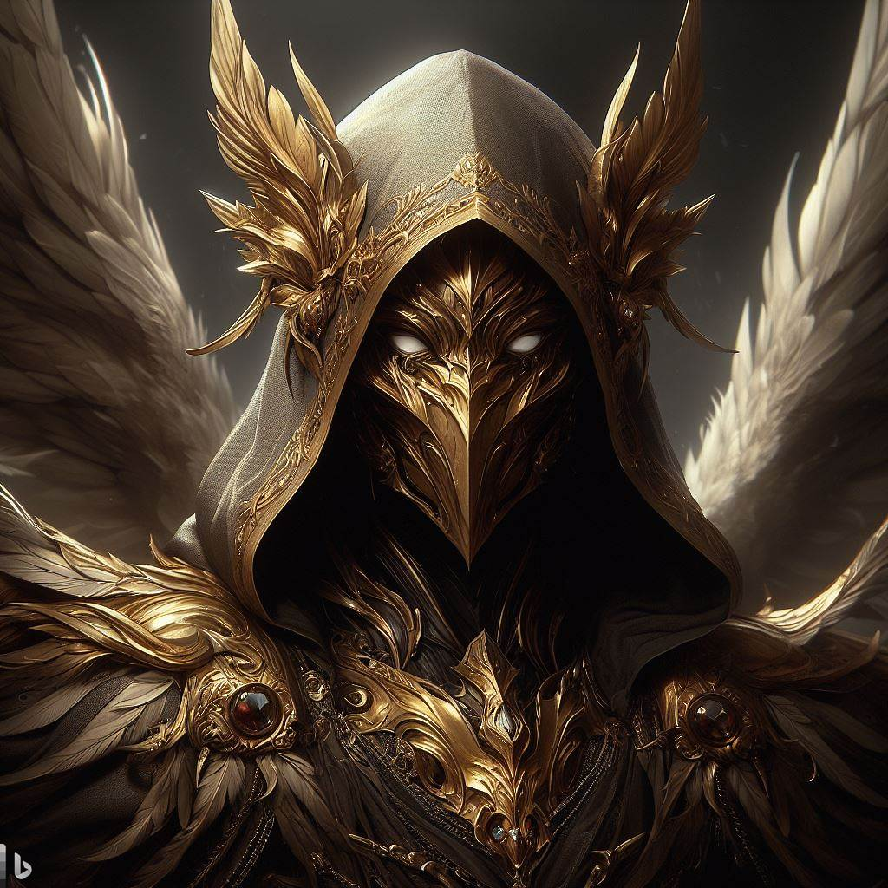
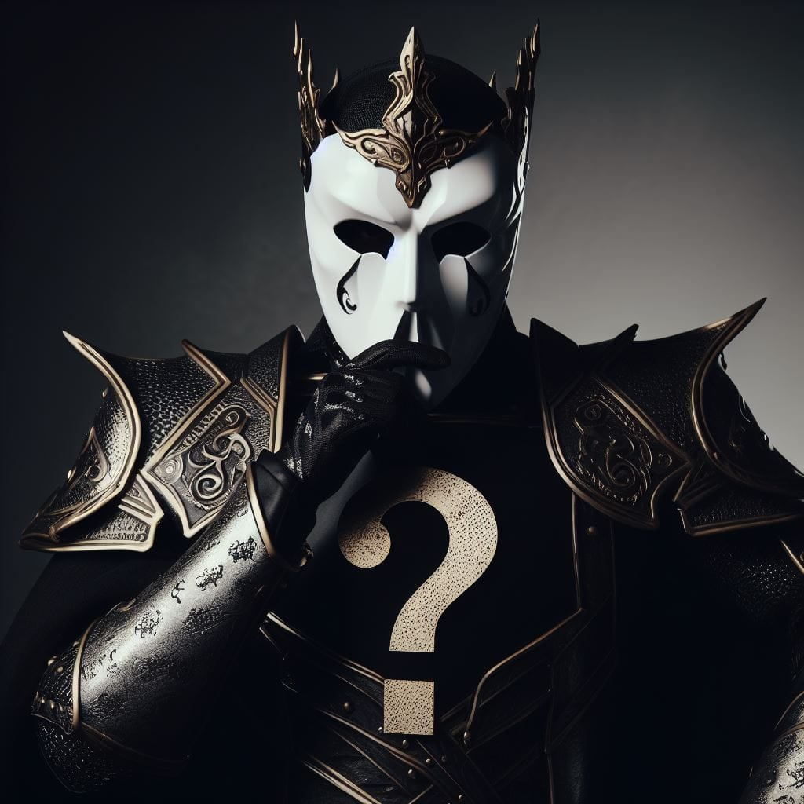
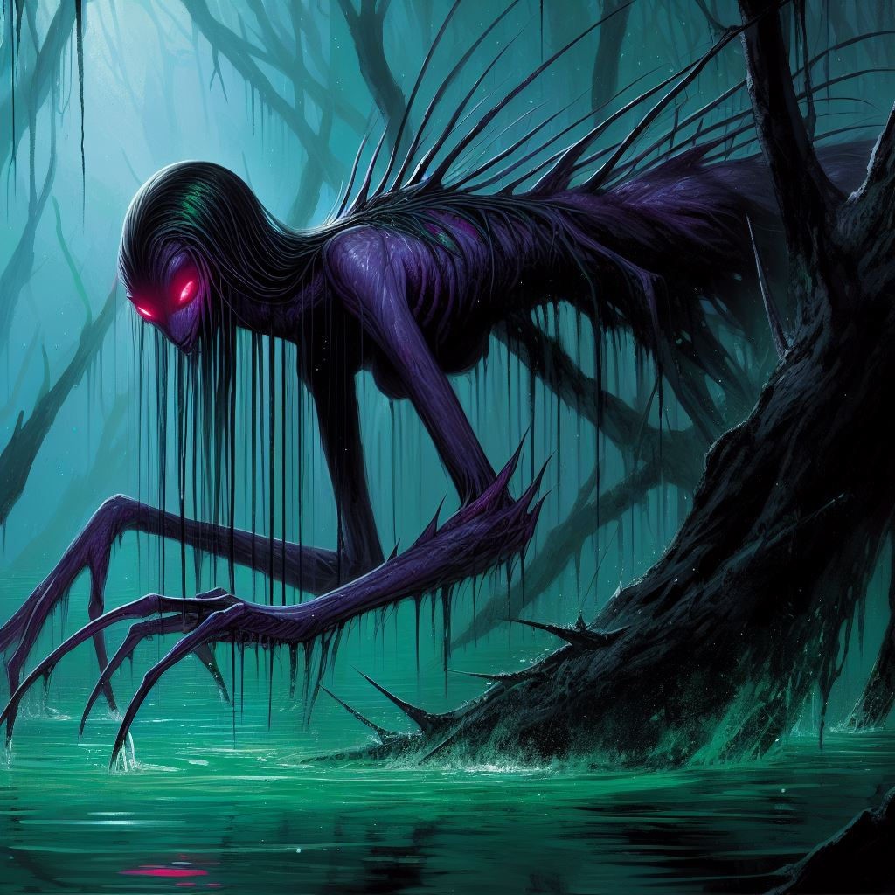

El otrora gran Reino de Aldea ha sido consumido por una antigua maldición que poco a poco convierte a sus habitantes en huecos sin sentido. Los últimos Señores que quedan se han retirado detrás de los muros de sus castillos en decadencia, luchando entre sí tanto como contra la creciente horda de almas perdidas. A este mundo, llega un guerrero sin nombre, sin pasado ni recuerdos, sólo el instinto de luchar contra la oscuridad cada vez más profunda. La primera tarea del héroe es abrirse camino a través de las afueras en ruinas, enfrascados en una lucha brutal para sobrevivir a la cosecha de nuevos horrores de cada noche. A medida que poco a poco ganan fuerza, emergen destellos del pasado (un colgante roto, débiles ecos de una voz), pero no hay claridad sobre su papel en este mundo condenado. Luchando contra caballeros huecos y monstruosidades retorcidas, penetran en las ruinas de las ciudades exteriores. En las profundidades del subsuelo, en catacumbas abandonadas hace mucho tiempo, el protagonista tiene una visión de una grandeza que se desvanece y de secretos ocultos. Entre los pergaminos antiguos encuentran las primeras pistas sobre los catalizadores primitivos de esta maldición, indicios de una oscuridad aún mayor que se agita en el corazón del mundo. Al emerger por fin, el guerrero establece su rumbo a través de las fronteras de la locura hacia una confrontación final con la verdadera fuente de la desesperación de este reino, y tal vez el primer destello de esperanza para reavivar sus almas.



